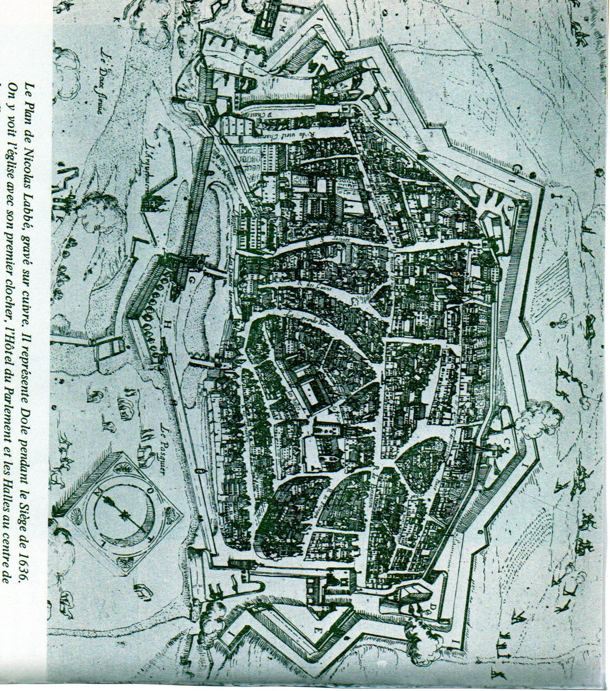
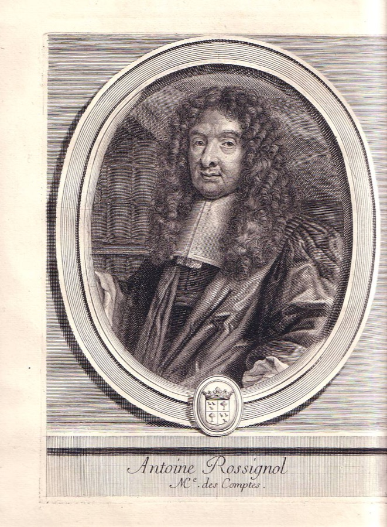

Dossiê · Franco-Condado, Guerra dos Dez Anos
Dole, 1636: a cifra que Rossignol tinha lido
Durante os oitenta dias do cerco de Dole, a capital do condado da Borgonha só tem um meio de falar ao exército que a deve socorrer: mensageiros que atravessam as linhas francesas, com cartas cujas palavras importantes estão escritas em números. Em Paris, Antoine Rossignol, o decifrador de Richelieu, lê esses números. Os sitiados acabam por o perceber e mudam de cifra. Quase quatro séculos depois, refizemos o caminho de Rossignol a partir das cartas recebidas por um dos chefes do exército de socorro, Jean Girardot de Nozeroy.
« Nostre chiffre est découvert : l’ennemi s’en sert ; gardés de vous y laisser surprendre. »
«A nossa cifra foi descoberta: o inimigo serve-se dela; guardai-vos de vos deixar surpreender.» O arcebispo de Besançon e a corte do Parlamento ao marquês de Conflans e ao conselheiro de Beauchemin, Dole, fim de julho de 1636 (minuta pela mão de Antoine Brun).[5]
O que é novo, o que já se conhecia
Conhecido. O texto em claro das passagens cifradas está impresso desde 1912. O historiador do Franco-Condado Émile Longin publicou os rascunhos destas cartas, conservados nos papéis de Antoine Brun; as palavras que Brun sublinhara para serem postas em cifra aparecem entre parênteses retos.[1] O episódio de Rossignol também é conhecido, pelas cartas de Richelieu e dos seus ministros que Longin publica no mesmo volume.
Novo, tanto quanto sabemos. A chave da cifra não está impressa em lado nenhum. Reconstruímo-la a partir das cartas recebidas, conservadas em Besançon, e verificámo-la depois com uma medida feita uma única vez, numa passagem posta de parte. Lemos em seguida com ela as passagens que não têm decifração de época, sem conhecer a edição de Longin. Comparada depois com o texto impresso, a nossa leitura concorda em 96,7 %. O dossiê mostra também o que era, concretamente, a cifra que Rossignol quebrou, e porque a pôde quebrar «aisément» (facilmente).
1636: a guerra entra no condado

O condado da Borgonha, o futuro Franco-Condado, pertence em 1636 ao rei de Espanha Filipe IV; é governado de longe, a partir de Bruxelas, pelo seu irmão, o cardeal-infante. Uma antiga neutralidade protege-o, em princípio, dos seus vizinhos franceses. Não resiste à guerra aberta entre a França e a Espanha: a 19 de maio de 1635, um arauto de Luís XIII vem declará-la a Bruxelas.[1] Um ano mais tarde, a 27 de maio de 1636, o exército do príncipe de Condé, Henrique II de Bourbon, apresenta-se diante de Dole, capital da província e sede do seu Parlamento.[1] É o episódio mais célebre daquilo a que Girardot de Nozeroy chamará a «guerre de Dix ans» (guerra dos Dez Anos), de que fará a narrativa de 1632 a 1642.[8][12]
Quinze mil homens, a elite da infantaria francesa, cercam a cidade. O grão-mestre da artilharia, La Meilleraie, primo de Richelieu, dirige os trabalhos; Gassion bate os campos com os seus cavaleiros.[1] Em Dole, a defesa assenta no velho arcebispo de Besançon, Ferdinand de Rye, com mais de oitenta anos, no mestre de campo Louis de la Verne e nos magistrados do Parlamento; com o arcebispo, formam os «commis au gouvernement» (comissários do governo) da província que ficaram na cidade, e as suas cartas partem em nome de «l’archevêque de Besançon et la cour» (o arcebispo de Besançon e a corte). Entre esses magistrados, o procurador-geral Antoine Brun, nascido em Dole em 1599, futuro plenipotenciário de Espanha no congresso de Münster.[1][12]
Fora da cidade, um exército de socorro reúne-se lentamente, com tropas recrutadas na região, sob o comando do marquês de Conflans, Gérard de Watteville, um velho marechal. O Parlamento junta-lhe um dos seus conselheiros, Jean Girardot de Nozeroy, senhor de Beauchemin (c. 1580–1651), que mais tarde fará a história desta guerra.[1][12] Todo o cerco cabe neste frente a frente epistolar: os sitiados suplicam que os venham socorrer, e depressa; Conflans e Girardot, que sabem as suas forças demasiado fracas para atacar as linhas francesas, esperam reforços imperiais. Longin, que não é brando com a impaciência de Brun, dá razão à prudência deles.[1]
Escrever de uma cidade sitiada
As cartas saem de Dole quase todas as semanas. Brun redige-as «au bruit du canon» (ao som do canhão), diz Longin, ao mesmo tempo que cifra e decifra os despachos; um dia, uma bala de canhão atravessa a chaminé do seu gabinete enquanto ele instrui um mensageiro.[1] Os correspondentes dão-se nomes de romance: Brun assina «Oronte», Conflans é «Persée» (Perseu). As passagens sensíveis, a hora de um ataque, os sinais, os lugares a queimar, são escritas em cifra no meio do texto em claro. No rascunho, Brun sublinha as palavras a cifrar; na carta que parte, estão escritas em números.[1]
O sistema funciona surpreendentemente bem. Numa trintena de correios, só três ou quatro são apanhados pelos franceses, escreve Longin.[1] Mas três ou quatro bastam. As cartas intercetadas seguem para Paris.
As cartas recebidas por Girardot
Longin trabalhou sobre os rascunhos, que ficaram nos papéis de Brun. As cartas enviadas, essas, foram guardadas pelo destinatário. Os papéis de Girardot de Nozeroy estão na Bibliothèque municipale de Besançon (Ms 1591 a 1595); o tomo IV, cota Ms 1594, contém nomeadamente a correspondência recebida em 1636. O catálogo impresso de 1915 só assinala «passages chiffrés» (passagens cifradas) no f. 106.[7][11] Percorrendo as imagens do volume, identificámos cinco peças cifradas:
| Fólio | Data | Remetentes | Cifra | Estado |
|---|---|---|---|---|
| f. 127 | 7 de junho de 1636 | o arcebispo e o Parlamento | «de pontos» | recto decifrado na margem na época; uma passagem do verso sem decifração |
| f. 181 e f. 183 | 25 de junho de 1636 | os comissários do governo | «de pontos» | dois exemplares cifrados da mesma carta; cópia em claro de época no f. 182 |
| f. 191 | 1 de julho de 1636 | Antoine Brun | «de pontos» | catorze passagens, nenhuma decifração de época |
| f. 200 | 22 de julho de 1636 | o Parlamento | «de pontos» | dois blocos, decifrados na margem na época |
| f. 106 | 12 de agosto de 1636 | o Parlamento | outra cifra | decifrado na margem na época; não quebrado por nós |
As quatro primeiras peças empregam a mesma cifra. A última, escrita três dias antes do levantamento do cerco, emprega outra. Esta mudança está no centro da história.
A cifra «de pontos»
O princípio é o mais simples possível: cada letra do alfabeto é substituída por um número, e os números são separados por pontos. Assim, «les» escreve-se 11.25.40. As letras u e v têm o mesmo número, tal como i e j; a separação das palavras não é marcada. Eis a chave que reconstruímos:
| letra | a | b | c | d | e | f | g | h | i, j | l | m | n | o | p |
|---|---|---|---|---|---|---|---|---|---|---|---|---|---|---|
| número | 35 | 31 | 29, 20 | 27 | 25 | 21 | 19 | 17 | 15 | 11 | 9 | 7 | 5 | 1 |
| letra | q | r | s | t | u, v | w | x | y | z |
|---|---|---|---|---|---|---|---|---|---|
| número | 36 | 38 | 40 | 42 | 44 | 48 | 50 | 52 | 54 |
A chave tem uma estrutura visível. De a a p, as letras recebem números ímpares que descem de 35 a 1; de q a z, números pares que sobem de 36 a 54. Faltam alguns números na sequência (33, 23, 13, 3, 46): talvez sejam sinais para letras raras, como o k, ou nulos, mas não aparecem nas passagens lidas. O 48 vale w: só aparece uma vez, no nome de Watteville, na minuta de Salins (ver mais abaixo). O 20 é um segundo número para c, visto uma única vez. O cifrador engana-se por vezes: escreve 45 por 40, ou 31.5.7.31.25.40, «bonbes», por «bombes» (bombas).[13]
Três passagens, dos números ao texto
Para cada passagem: os números tal como os lemos na carta recebida, a nossa leitura (chavetas = palavra provável), e depois o texto impresso por Longin segundo o rascunho de Brun.
Os sinais (Brun, 1 de julho de 1636, f. 191)
11 25 40 · 40 15 19 7 35 11 40 · 11 15 44 38 25 25 40
les signals {livrées}
Longin: «[les signals, livrées]» (os sinais, as librés). As «livrées» são as marcas de reconhecimento (cores, faixas) que permitirão aos sitiados distinguir as tropas amigas na refrega. Lê-se aqui a chave letra a letra: 11 = l, 25 = e, 40 = s; depois 40 = s, 15 = i, 19 = g, 7 = n, 35 = a, 11 = l, 40 = s.
A forja de Drambon (Brun, 1 de julho de 1636, f. 191)
27 25 42 38 44 15 40 25 7 42 35 1 11 35 15 7 11 35 21 5 38 19 25 27 25 27 38 35 9 31 5 7 25 42 35 44 42 38 25 40 5 44 40 25 21 5 7 42 11 25 40 31 5 7 31 25 40 36 44 5 7 7 5 44 40 15 25 42 42 25
détruisent a plain la {forge} de Drambon et autres ou se font les {bombes} qu’on nous iette
Longin: «[détruisent à plein la forge de Drambon et autres où se font les bombes qu’on nous jette]» (destruam por completo a forja de Drambon e outras onde se fazem as bombas que nos lançam).
Brun pede que a guarnição de Gray queime as aldeias de Rigny, Talmay, Pontailler, Mirebeau, e sobretudo que destrua as forjas de Drambon, do outro lado da fronteira, que fabricam os projéteis disparados sobre Dole. Segundo uma conta dos rendeiros das forjas citada por Longin, tinham fornecido 1416 granadas e 5301 balas. Na noite de 3 para 4 de julho, o capitão Pierre de Perceval saqueia as forjas à frente de quatrocentos mosqueteiros de Gray; a 8, Conflans e Girardot anunciam-no a Dole.[2] Não sabemos se foi a carta de 1 de julho que desencadeou a operação, mas esta foi executada nessa mesma semana.
Mil e duzentos homens (os comissários do governo, 25 de junho de 1636, f. 183)
1 5 44 38 35 42 42 36 44 25 27 25 27 5 44 54 25 29 25 7 42 17 5 9 9 25 40
pour {attaque} de {douze} cent hommes
Cópia em claro de época, f. 182: «pour attaque de douze cens hommes» (para ataque de mil e duzentos homens). O cifrador saltou um a («attque»). O 54, único exemplo de z, não tinha sido visto durante a aprendizagem da chave: o seu valor vem desta cópia em claro.
Esta carta de 25 de junho existe em três exemplares no volume: dois cifrados (f. 181, cuja margem direita se perdeu, e f. 183, completo) e uma cópia em claro (f. 182). A carta partia provavelmente em duplicado, por dois mensageiros diferentes, para ter mais hipóteses de chegar. Os três testemunhos cruzam-se: é uma verificação independente da chave.
Como a chave foi encontrada e verificada
Encontrar uma chave é fácil quando se tem uma decifração ao lado da cifra. O difícil é provar que está certa, e não apenas que dá um texto plausível. Seguimos um procedimento fixado de antemão e registado (impressão digital SHA-256) antes de qualquer medida.[13]
- Aprendizagem. A carta de 22 de julho (f. 200) contém dois blocos cifrados, ambos decifrados na margem por uma mão contemporânea. O primeiro bloco, «Nous louons Dieu de la bonne et courageuse résolution que vous avez prise…» (louvamos a Deus pela boa e corajosa resolução que tomastes…), conta 177 números para 177 letras da glosa. Dele se tirou a chave, que foi depois congelada.
- Controlo. O segundo bloco (341 números) foi posto de parte. Uma única medida, feita depois de congelada a chave: 90,7 % das letras decifradas concordam com a glosa marginal. Para medir o que vale este número, fizemos a mesma medida com 200 chaves baralhadas ao acaso: a melhor só atinge 22,9 % (13,1 % em média). Os limiares de êxito tinham sido fixados antes da medida: pelo menos 85 %, e pelo menos 30 pontos acima da melhor chave-testemunha.
- Leitura. A chave, sem alterações, serviu depois para ler as passagens que não têm decifração de época: catorze passagens da carta de Brun de 1 de julho e uma passagem do f. 127v. Resultado, contado palavra a palavra segundo a regra de Daniel Bourdeau: 128 palavras, das quais 113 seguras, 11 prováveis e 4 por resolver (96,9 % de palavras lidas).[14]
- A posteriori. Só ao verificar se estas cartas já tinham sido publicadas é que encontrámos a edição de Longin. Comparada com o seu texto, a nossa leitura concorda em 96,7 % das letras (96,3 % no conjunto das passagens). Esta comparação não estava prevista no procedimento: confirma a leitura, não substitui o controlo.
As diferenças restantes são instrutivas. Longin publica os rascunhos, Girardot recebeu as cartas enviadas: a cifra escreve «par son altesse» (por Sua Alteza) onde o rascunho abrevia «par S. A.», e o rascunho contém duas palavras sublinhadas («de Mercy et de Forgats», «accueillir») que não encontrámos na cifra do f. 191.
Rossignol diante de Dole

Antoine Rossignol nasceu em Albi, a 1 de janeiro de 1600 segundo o seu primeiro biógrafo, Charles Perrault (outras fontes fazem-no nascer em 1589).[9][10] Matemático, dá-se a conhecer nas guerras contra os huguenotes: no cerco de Réalmont, no Languedoc, decifra no próprio momento uma carta dos sitiados que confessam faltar-lhes pólvora; o príncipe de Condé, já ele, devolve-lhes a carta decifrada, e a cidade rende-se nesse mesmo dia. Perrault situa o episódio em 1626; a tomada de Réalmont por Condé é habitualmente datada de abril de 1628.[9][10] Richelieu chama-o à corte, e Rossignol decifra as cartas intercetadas durante o cerco de La Rochelle (1627–1628). Servirá Richelieu, depois Mazarino e Luís XIV, durante mais de cinquenta anos. Perrault, que escreve o seu elogio em 1696, acrescenta que quase nunca encontrou cifra «qui luy ayt esté impénétrable» (que lhe fosse impenetrável) e que guardou sobre os seus serviços «un silence inviolable» (um silêncio inviolável).[9] Falar-se-á mais tarde de um «gabinete negro»; em 1636, o serviço da cifra de Richelieu é, antes de mais, este homem.
A 21 de julho de 1636, Richelieu escreve a Condé: «Je vous renvoye le déchiffrement des lettres que ceux de Dole escrivoient au marquis de Conflans, par où vous verrez l’estat auquel ilz sont.» (Devolvo-vos a decifração das cartas que os de Dole escreviam ao marquês de Conflans, pela qual vereis o estado em que se encontram.) Envia ao acampamento «celuy qui a fait le déchiffrement» (aquele que fez a decifração), que tem uma proposta a fazer: graças ao que se soube, talvez se pudesse «attraper le secours et le deffaire» (apanhar o socorro e desbaratá-lo).[3] No mesmo dia, o secretário de Estado da guerra, Sublet de Noyers, apresenta o portador ao príncipe: «le sr Rossignol mesme, qui est le plus admirable deschiffreur qu’il y ait au monde» (o próprio senhor Rossignol, que é o mais admirável decifrador que há no mundo). Traz a sua decifração e os originais intercetados.[3] Rossignol fica mais de uma semana no acampamento. O acampamento francês, por seu lado, também decifra: a 22 de julho, Condé envia a Paris as cópias de outras cartas tomadas ao exército inimigo e «déchiffrées» (decifradas) no local.[6]
O «estratagema» de Rossignol é o prolongamento natural da quebra: já que se sabe escrever na cifra dos sitiados, podem enviar-se-lhes cartas falsas. Uma carta contrafeita, supostamente vinda do exército de socorro, é entregue a um camponês de Chissey por trinta cavaleiros franceses que se dizem desse exército; fixa o dia e o lugar de uma surtida, e esquadrões franceses fazem, no dia marcado, o papel do exército de socorro a atacar as linhas. Os sitiados não saem. Brun notou que o papel tinha a mesma marca que o do príncipe de Condé, que os números não tinham a forma habitual, e que tudo estava cifrado «jusques à la soubscription mesme, ce que les correspondans n’avoient jamais prattiqué» (até à própria assinatura, coisa que os correspondentes nunca tinham feito). Girardot, por seu lado, nota que «les signatures estoient autres que nous n’auions accoustumé» (as assinaturas eram outras que não as que costumávamos usar).[4][8] A 4 de agosto, Condé devolve Rossignol a Richelieu: este «n’a rien obmis […] pour accomplir son stratagème tenté par deux fois» (nada omitiu […] para cumprir o seu estratagema, tentado por duas vezes). La Meilleraie, no mesmo dia, atribui o fracasso à fraqueza dos sitiados, que não ousam arriscar os seus soldados; Longin retifica: foi a descoberta da armadilha que os reteve.[6]
O episódio ilustra uma lição que os criptólogos redescobrirão muitas vezes: uma cifra quebrada permite ler, mas também falsificar. Aqui, não é a cifra que protege os sitiados, são os sinais exteriores da carta, o papel, a escrita, os hábitos dos correspondentes.
Porque se quebrava esta cifra
Longin escreve que Rossignol «découvrit aisément le chiffre» (descobriu facilmente a cifra).[1] Com a chave diante dos olhos, percebe-se porquê.
- Uma letra, um número. Cada letra tem um só equivalente (com uma exceção, o 20). As frequências do francês passam, pois, tal e qual para a cifra: alguns números (os de e, u, s, o, n) voltam sem cessar. As cifras das chancelarias da época são muitas vezes mais elaboradas: vários sinais para uma mesma letra frequente, códigos para os nomes e as palavras sensíveis (ver por exemplo o dossiê Copenhaga, 1675).
- Os pontos recortam o texto. O leitor sabe exatamente onde começa e acaba cada número. Não tem de adivinhar uma segmentação, o que é muitas vezes metade do trabalho.
- Uma chave que se adivinha. Os números seguem o alfabeto: ímpares descendentes de a a p, pares ascendentes de q a z. Encontradas duas ou três letras, o resto deduz-se quase por aritmética.
- A cifra no meio do claro. Os números inserem-se em frases legíveis. O contexto, «que la garnison de Gray…» (que a guarnição de Gray…), anuncia muitas vezes a palavra cifrada: um nome de lugar, um número de soldados, um dia.
- A mesma chave para todos, durante semanas. O arcebispo, o Parlamento, os comissários e Brun empregam todos esta cifra, de junho até ao fim de julho, pelo menos. Cada carta intercetada acrescenta material.
Foi também isso que nos permitiu encontrar a chave tão depressa. Mas tínhamos uma vantagem que Rossignol não tinha: as decifrações anotadas na margem pelos próprios destinatários.
Agosto: uma nova cifra
No fim de julho, os sitiados percebem que a sua cifra é lida. Três cartas sucessivas previnem Conflans e Girardot. A primeira: «Nostre chiffre est découvert : l’ennemi s’en sert» (a nossa cifra foi descoberta: o inimigo serve-se dela). A segunda: «l’ennemi a treuvé la clef de nostre chiffre, avec quoy il nous a pensé surprendre» (o inimigo achou a chave da nossa cifra, com a qual por pouco nos surpreendeu). A 2 de agosto, a terceira, «pour une troisiesme fois» (por uma terceira vez), censura o exército de socorro por se ter servido ainda da antiga cifra na sua última carta.[4][5]
Brun responde também com a troça. No mesmo dia, faz chegar aos franceses uma carta dirigida, em aparência, a Conflans e feita de um «étrange amalgame de lettres, de chiffres, de signes bizarres» (estranho amálgama de letras, de algarismos, de sinais bizarros) donde emergem nomes antigos, Petronius, Filadelfo, Momo, Lucrécia. O historiador do cerco, Jean Boyvin, descreve-a como «figures assemblées au hasard et sans autre dessein que de se mocquer du déchiffreur et luy faire distiller la cervelle» (figuras juntas ao acaso e sem outro desígnio que zombar do decifrador e fazê-lo destilar os miolos). O mensageiro, acrescenta Boyvin, foi «bien receu au camp, salarié et congédié» (bem recebido no acampamento, pago e despedido), enquanto o príncipe suava «au dénouement de ce nœud gordien» (a desatar este nó górdio).[5]
A verdadeira nova cifra parte ao mesmo tempo. «Je répare la perte du chiffre par l’autre joint, qu’il faut bien spéculer jusques aux derniers traicts» (reparo a perda da cifra com a outra junta, que é preciso examinar bem até aos últimos traços), escreve Brun a 2 de agosto a Jean Sordet, o advogado de Dole que a corte deu a Girardot como secretário.[5] A 3 de agosto, já se queixa: «Comme ce chiffre est malaisé et emporte beaucoup de temps, je ne puis dire beaucoup de choses.» (Como esta cifra é difícil e leva muito tempo, não posso dizer muitas coisas.)[5] Esta nova cifra já não tem pontos: são sequências de números de dois algarismos, que Longin imprimiu tal e qual, com este comentário: «Mes efforts pour découvrir ce chiffre sont demeurés vains.» (Os meus esforços para descobrir esta cifra foram vãos.)[5]
A carta de 12 de agosto conservada por Girardot (f. 106) está escrita neste sistema, ou num sistema da mesma forma. O seu texto em claro lembra que o inimigo tivera a chave da cifra anterior. Uma mão contemporânea anotou na margem a decifração do bloco cifrado: «que cette ville achève de se perdre sans aucun défaut de ceux qui sont dedans» (que esta cidade acaba de se perder sem falta alguma dos que estão dentro). Tentámos quebrar esta cifra com o mesmo procedimento, aprendendo na primeira metade do bloco e controlando na segunda. Fracasso: 16,0 % de concordância, menos do que a melhor das 200 chaves-testemunha (28,0 %). Com 78 números para 63 letras de glosa, o bloco é demasiado curto, e o sistema provavelmente não é uma simples substituição: deve conter nulos, ou números para sílabas. Neste ponto, Longin e nós estamos empatados. E sem dúvida Rossignol também: nenhuma fonte diz que tenha lido a cifra de agosto.[13]
15 de agosto: o levantamento do cerco
O cerco decide-se longe de Dole. Em julho, o exército do cardeal-infante entra na Picardia; La Capelle e Le Catelet caem, Corbie é cercada, e o pânico chega a Paris. A ofensiva espanhola é, diz o próprio cardeal-infante, uma diversão destinada a chamar as tropas francesas que cercam Dole.[1][8] A 1 de agosto, o barão de Lamboy chega a Gray com os seus cavaleiros imperiais; dez dias mais tarde, o duque da Lorena segue-o. A 8 de agosto, Paris ordena que a maior parte dos regimentos seja dirigida para a Picardia, se a mina escavada sob o bastião do Vieux-Château não der resultado.[1] Na noite de 14 para 15 de agosto, o exército francês retira-se das suas linhas. Na manhã da Assunção, os fortes estão vazios; o conselheiro de Champvans entra logo na cidade, onde a corte o acolhe como seu libertador.[8] Corbie capitula, nota Longin, no mesmo dia em que os habitantes de Dole dão graças pela sua libertação.[1]
Antoine Brun irá negociar por Filipe IV em Münster; será ele a separar as Províncias Unidas da aliança francesa, pelo tratado de 30 de janeiro de 1648; Mazarino chamar-lhe-á «grand artisan de fourbes et de dissimulations» (grande artífice de embustes e de dissimulações), o que Longin toma por um elogio.[1] Girardot, retirado dos negócios, escreverá a sua Histoire de dix ans, só impressa em 1843. Diz nela dos sitiados o que também as suas cartas mostram: queriam ser socorridos imediatamente, quando isso teria sido, segundo ele, «tout hazarder et tout perdre» (tudo arriscar e tudo perder).[8]
Salins, 29 de junho: a resposta cifrada do exército de socorro
As cartas de Dole são apenas metade da correspondência: Conflans e Girardot respondiam na mesma cifra. O volume seguinte dos papéis Girardot, cota Ms 1595, guarda perto do fim a minuta de uma dessas respostas (f. 389r–v), com na margem «Minute de lettre de messieurs le marquis de Conflans et conseiller de Beauchemin à Mr le procureur général» (minuta de carta dos senhores marquês de Conflans e conselheiro de Beauchemin ao senhor procurador-geral) e, algumas folhas adiante (f. 397), o rascunho em claro da mesma carta. É a carta de Salins de 29 de junho de 1636. O seu texto está impresso por Longin (n.º CLX), segundo o original recebido por Brun e a decifração pela mão de Brun; Longin não utiliza a minuta de Besançon.[15]
Conflans e Girardot pedem que lhes escrevam o estado da cidade «en termes clairs et précis» (em termos claros e precisos); não querem «rien oublier pour vous secourir» (nada esquecer para vos socorrer) e, se Dole estiver apertada, arriscarão tudo. Mas detalham o que os retém: a cavalaria inimiga é mais forte do que a sua, que não chega a mil cavalos; esperam os mil e quinhentos cavalos que Watteville traz; não têm dinheiro nenhum, sete peças de campanha, dificuldade em reunir cavalos e carros, e é preciso levar víveres para quatro dias; os soldados dormem no chão, sem pão. Esperam-se levas de Friburgo e de Lucerna, manda-se buscar grão a Genebra e a Berna. Pedem enfim aos sitiados que não ponham «nostre reste sur un mauvais jeu» (o nosso resto num mau jogo): perder tudo de um só golpe, a cidade e a terra, seria «un crime irréparable» (um crime irreparável).
Esta minuta é um segundo testemunho da cifra «de pontos», escrita desta vez do outro lado das linhas. Tratámo-la como um teste independente, segundo um procedimento fixado de antemão: a chave foi reaprendida na primeira parte da minuta, alinhada com o rascunho do f. 397 (71 passagens), congelada e depois medida uma única vez na parte final, posta de parte (9 passagens, 177 letras). Resultado: 95,5 % das letras certas, contra 31,6 % no máximo para 200 chaves baralhadas. Os 18 números comuns têm exatamente o valor da chave tirada do Ms 1594. Aparece um número novo: 48 = w, no nome de Watteville. Leitura das passagens cifradas, segundo a contagem de Daniel Bourdeau: 261 palavras, das quais 229 seguras, 9 prováveis e 23 restituídas onde a margem da folha está roída; nenhuma por resolver.[15]
A minuta não é exatamente o rascunho. Onde o f. 397 escreve «nous trouver» (encontrar-nos), a cifra diz «vous secourir» (socorrer-vos); «malheur» (desgraça) torna-se «meilleur» (melhor), «dé» (dado) torna-se «jeu» (jogo). O texto impresso por Longin segue sempre a cifra: a minuta cifrada é o último estado da carta antes do envio. O rascunho revela também dois nomes de código: por cima de «Dole», uma mão escreveu «Engoulevant», nome que Longin imprime sem o explicar; e onde o rascunho fala da assistência de «Besançon», a minuta escreve «Pluton» (Plutão).
O texto desta carta não é, pois, novo. O contributo é a própria minuta, guardada do lado do exército de socorro, a confirmação da chave num documento independente, o valor de w e os dois nomes de código. As imagens do Ms 1595 não são reproduzidas.
O que este dossiê traz
- A chave da cifra «de pontos» do Parlamento de Dole e de Antoine Brun em junho–julho de 1636, reconstruída e validada por uma medida única (90,7 % contra 22,9 % no máximo para 200 chaves-testemunha). Não está impressa em lado nenhum, tanto quanto sabemos; Longin publicou o texto, não a chave.
- A própria cifra, isto é, o que Rossignol tinha diante dos olhos: a forma dos números, a ordem da chave, os erros do cifrador. Permite compreender concretamente a palavra de Longin, «aisément» (facilmente).
- Uma leitura feita só a partir dos números, controlada depois com o texto impresso (96,7 %), e uma carta em três testemunhos (f. 181, f. 183, f. 182) que mostra que os despachos partiam em duplicado.
- Um fracasso documentado: a cifra de agosto (f. 106) continua fechada, como para Longin em 1912.
- Um segundo testemunho, do outro lado: a minuta cifrada da carta de Conflans e Girardot de 29 de junho (Ms 1595), que confirma a chave por uma medida independente (95,5 % contra 31,6 %) e dá w = 48, bem como dois nomes de código, Engoulevant para Dole e Pluton para Besançon. O texto desta carta estava impresso por Longin.
O texto das cartas, a existência da decifração de Rossignol, a carta falsa e a mudança de cifra eram conhecidos. Este dossiê reúne-os em torno das cartas recebidas, que não tinham sido utilizadas.
O que continua incerto
- Os números foram lidos por um só leitor, nas imagens da biblioteca, que não são reproduzidas aqui. As palavras prováveis vêm de números emendados, de um valor visto uma única vez ou de um erro do cifrador.
- Não sabemos que cartas Rossignol leu, nem se reconstruiu a chave inteira: os despachos de Paris falam apenas do «déchiffrement des lettres» (decifração das cartas). A cifra que descrevemos é a das cartas recebidas por Girardot; é muito provavelmente a que Rossignol quebrou, pois os sitiados substituem-na logo que sabem da fuga de informação.
- As datas são as das cartas recebidas. Longin, que datava rascunhos muitas vezes sem data, propõe por vezes outra (6 de junho para a carta de 7 de junho, 24 de junho para a de 25).
- A cifra de agosto não está quebrada; a natureza exata do seu sistema continua desconhecida.
- Não consultámos diretamente a história do cerco de Boyvin (1637) nem o estudo de Jules Gauthier sobre Brun (1902); citamo-los segundo Longin.
Notas e referências
É. Longin (ed.), «Le siège de Dole par le prince de Condé (27 mai – 15 août 1636). Documents inédits», Mémoires et documents inédits pour servir à l’histoire de la Franche-Comté, publicados pela Académie des sciences, belles-lettres et arts de Besançon, t. X, Besançon, 1912, introdução p. IX–XXXIV (declaração de guerra de 1635 p. X; exército de Condé p. XI–XII; Rossignol p. XV–XVI; Brun p. XVIII–XX; prudência de Conflans p. XX–XXI; Picardia e levantamento do cerco p. XXXII–XXXIV). archive.org ↗
Longin 1912, n.º LIV (p. 89–90), CXXXII (p. 190–191), CLXXVIII (p. 249–251; notas sobre Drambon: aldeia do cantão de Pontailler, conta das forjas, Arch. de la Côte-d’Or), CCXIX (carta de Conflans e Girardot, Besançon, 8 de julho de 1636, e nota sobre a incursão de Perceval na noite de 3 para 4 de julho), CCLXXXVII (22 de julho, p. 405).
Longin 1912, n.º CCLXXVIII (Richelieu a Condé, Paris, 21 de julho de 1636, p. 394–395, com a nota de Longin sobre Rossignol), CCLXXIX e CCLXXX (Sublet de Noyers a Condé, Paris, 21 de julho de 1636, p. 395–396).
Longin 1912, n.º CCCXXXII (o arcebispo e a corte a Conflans e Beauchemin, Dole, 2 de agosto de 1636, p. 473–474), com a nota de Longin que cita Boyvin, Le siège de la ville de Dole, p. 252.
Longin 1912, n.º CCCXIII (fim de julho de 1636, p. 443–444), CCCXXI (fim de julho, p. 458–459), CCCXXXIII (2 de agosto, p. 475, citando Boyvin p. 254), CCCXXXIV (Brun a Sordet, 2 de agosto, p. 476–478, e a nota «Mes efforts pour découvrir ce chiffre sont demeurés vains»), CCCXXXVII (Brun a Sordet, 3 de agosto, p. 482–484).
Longin 1912, n.º CCLXXXV (Condé a Richelieu, acampamento diante de Dole, 22 de julho de 1636, p. 401–402), CCCXL (Condé a Richelieu, 4 de agosto, p. 486–487), CCCXLI (La Meilleraie a Richelieu, 4 de agosto, p. 487, e nota de Longin).
Bibliothèque municipale de Besançon, Ms 1594 (papéis Girardot de Nozeroy, Ms 1591–1595, t. IV), f. 106, 127, 181–183, 191, 200; imagens consultadas no Mémoire vive, não reproduzidas.
Jean Girardot de Nozeroy, Histoire de dix ans de la Franche-Comté de Bourgougne, 1632–1642, ed. J. Crestin, Besançon, 1843, p. 81 (Brun «avait les chiffres», tinha as cifras), p. 119–120 («tout hazarder et tout perdre»; as cifras descobertas e as assinaturas), p. 125–130 (Picardia, retirada francesa, entrada de Champvans). archive.org ↗
Charles Perrault, Les Hommes illustres qui ont paru en France pendant ce siècle, t. I, Paris, 1696, p. 57–58, «Antoine Rossignol, maistre des comptes». archive.org ↗
Wikipédia (fr), «Antoine Rossignol» (nascimento em 1589 segundo o Mercure galant de dezembro de 1682) e «Réalmont» (tomada da cidade por Condé em abril de 1628), consultados a 4 de novembro de 2026.
Catalogue général des manuscrits des bibliothèques publiques de France, t. XLV (Besançon), 1915, descrição do Ms 1594.
Wikipédia (fr), «Antoine Brun (diplomate)» (Dole, 29 de junho de 1599 – Haia, 2 de janeiro de 1654) e «Jean Girardot de Nozeroy» (Salins, 1580 – 1651), consultados a 4 de novembro de 2026; ver também Longin 1912, p. XVII–XX.
Protocolo, chave, medidas e leituras: ficha «O cerco de Dole, 1636» da página Documentos (chave, passagens, contagem, método e limites). Dossiê de investigação de Brice Dudout, 4 de novembro de 2026.
Daniel Bourdeau, regra «lido pelo sentido» (seguros, prováveis, restituídos, por resolver) e catálogo dos cifrados, repositório cyphersolver ↗.
Bibliothèque municipale de Besançon, Ms 1595 (papéis Girardot de Nozeroy, t. V), f. 389r–v (minuta cifrada) e f. 397r (rascunho em claro), Mémoire vive ↗; imagens consultadas, não reproduzidas. Texto impresso: Longin 1912, n.º CLX, p. 253–255, segundo o original recebido por Brun (papéis de Brun, t. VII, fol. 22–23) e a sua decifração pela mão de Brun (fol. 24–25). Controlo: procedimento pré-registado de 9 de novembro de 2026, uma medida, 0,955 contra 0,316 (melhor de 200 chaves baralhadas), 177 letras postas de parte.